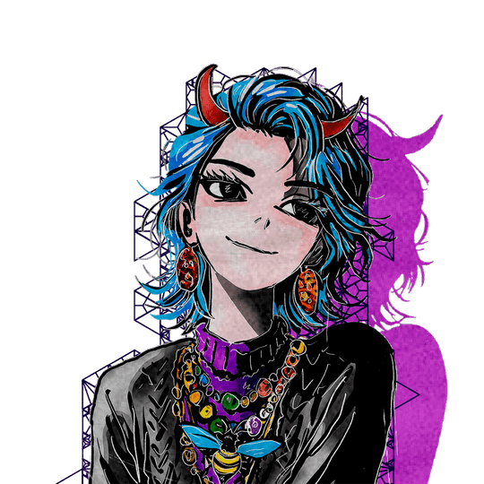

Welcome

Have you ever felt a voice came from afterworld and sounds as have returned from somewhere no one can name?
Explore the voicebank of 友人 (Eugene), designed for smooth Japanese vocal synthesis. Use the navigation above to download, read the changelog, and learn about the voicebank.